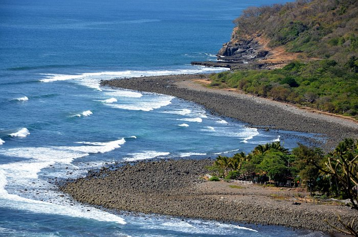

Lleno de atracciones por descubrir, El Salvador ofrece al visitante más de 300 kilómetros de costa del océano pacifico, majestuosos volcanes y un extenso sistema de parques, además de toda la cultura de suspueblos coloniales y parques arqueológicos,
El día de los difuntos en El Salvador
Es una celebración que se realiza el 2 de noviembre
complementando al Día de Todos los Santos
(celebrado el 1 de noviembre), cuyo objetivo
es orar por aquellos fieles que han acabado
su vida terrenal y, especialmente, por aquellos
que se encuentran aún en estado de purificación
en el Purgatorio
¿Qué almas llegan el 1 de noviembre?
1 de noviembre: es el Día de todos los Santos,
cuando llegan las almas de quienes murieron
en su infancia, antes de los 12 años. 2 de noviembre:
es el Día de Muertos, cuando llegan los demás adultos.
En El Salvador, al noreste de la capital, se realiza
el Festival de la Calabiuza, donde personas salen
a desfilar con atuendos de la Santa Muerte o el
grito de medianoche. Se rememora no solo a los
fallecidos sino también la tradición de pedir
ayote (calabaza) en miel
Fiesta de las Cruces (Cruz de Mayo)
Holiday
"Vestir la cruz" era la actividad con que se
abría la celebración el 1 de mayo. Consistía
en colocarle unos lienzos, frutas,de la cosecha
de ese año que llevaban en su centro un crucifijo
y los elementos de la Pasión.El objetivo era
expresar el sacrificio de Cristo
para salvar a la humanidad.
¿Qué se hace en el Día de la Cruz?
Esta tradición se basa en tomar una cruz
hecha de palo de jiote y adornarla con materiales
coloridos, principalmente papel en forma de
cortina o en ondas alrededor de la cruz. A su
vez, se colocan diversas flores y frutas al
pie de la cruz.
El 3 de mayo en muchos países del mundo se conmemora
el Día de la Santa Cruz, instituida en el siglo IV.
Esta tradición popular, que tiene sus orígenes muy
antiguos en Jerusalén, se sigue festejando en varios
pueblos de habla hispana.